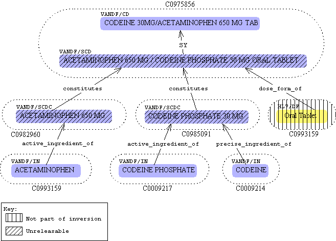
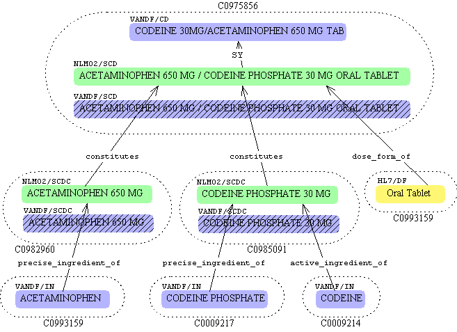

In this model, all atoms in the graph are owned by the source (VANDF01),
except for the dose form which is owned by HL7, and all of the atoms are
releasable, which is to say that they can be found in the 2002AA
MRCON/MRSO. The
SNF atoms are given a term type of
SCD
(
SNF Clinical Drug), the
component atoms are given a term
type of
SCDC (
SCD Component), and the
ingredient atoms
are given a term type of
IN (
INgredient). The
SCD ,
SCDC , and
IN atoms were all algorithmically generated
and subjected to human review before insertion, but the graphs were not directly
edited in the
MID.
The inversion of the
SNF graphs for VANDF was important for several
reasons: it proposed a model for how to represent normalized drug information
in the
MID, it normalized the dose forms by using a standard terminology,
and it facilitated the development of sophisticated algorithms for automatically
generating normalized forms of potentially very ugly drug names. However,
the human review of VANDF in the
MID exposed problems in the algorithmic
approach to creating normalized forms and revealed the need for direct human
editing of the
SNF graphs in the
MID. Additionally, the
model of attributing the
SNF graph's atoms and relationships to a
particular source (such as VANDF) creates a number of problems when we consider
that all drug sources should be inverted to make use of SNF data. In
particular, we would have mass duplication of all
SCD,
SCDC
, and
IN atoms in MRSO because there would be multiple copies of
the same row with different source values and we would have mass duplication
of the relationships that connect the graph in MRREL for the same reason.
Proposed Model
Some changes need to be made to the VANDF model to make the best, most
efficient use of the
SNF as well as to allow direct editing of the
graph in the
MID. In particular, there are four areas that must
be addressed:
- Inversion Model
. What is the nature of the inversion time SNF graph for a drug source?
In particular, what sources are the various pieces attributed to,
how are precise vs. active ingredients represented, how are
ingredients represented for a source that does not natively name ingredients?
- Editing Model
. What is the nature of the SNF graph editing? In particular, what
are the editing operations, what effects do the editing operations have on
the data, how is the duplication of (SCD, SCDC, and IN
) atoms constrained, and how does editing affect the release view of the
graph?
- Post Editing Model
. What post editing tasks, such as matching and merging, need to be performed
and how are these processes managed?
- Update Model
. When a drug source is updated, how is it inverted/inserted to best preserve
previous editing work?
The following subsections attempt to address the questions raised above.
Inversion Model
The model used to invert the
SNF graphs for VANDF is a good starting
point. It needs to be expanded to capture the complexity that arises
when more sources are thrown into the mix. Following are the variables
that the model must account for:
- The SAB of the SCD and SCDC atoms. At inversion time these
will belong to the source in question, such as VANDF01.
- The SAB of the relationships in the graph. At inversion
time these will belong to the source in question, such as VANDF01.
- The SAB of the dose form atom. This will be an HL7/DF.
- The SAB of the IN atoms. At inversion time these will belong
to the source in question, such as VANDF01.
- The releasability of the SCD, SCDC, and IN atoms. The SCD
and SCDC atoms will always be inserted as unreleasable (tobereleased='n'
). The IN atoms will be marked as releasable (tobereleased='y'
) if they are legitimate atoms from the source and will be marked as unreleasable
otherwise. So, a source like MMX may contain clinical drugs that include
ingredients that are not explicitly named in MMX itself. In this case,
IN atoms attributed to MMX will be inverted but as unreleasable atoms. If
the ingredient is explicitly named in MMX, then it will be inserted
as a releasable IN atom attributed to MMX.
- The RELA values for the CD to SCD relationships. There
are four possibilities for describing this relationship.
- If the atoms are synonymous, they should be connected by an SFO/LFO
relationship with a null RELA.
- If the atoms are synonymous and the CD is the trade name they should
be connected by an SY tradename_of relationship.
- If the SCD atom includes a dose form and the CD atom does not explicitly
indicate a dose form, they should be connected by an NT isa relationship.
- If the relationship is of another type, they should be connected
by an RT mapped_to relationship.
- The RELA values for the SCDC to SCD relationships. This
will be constitutes. One or more SCDC atoms may be connected
to an SCD for this type of relationship.
- The RELA values for the IN to SCDC relationships. For things
considered active ingredients, the value will be active_ingredient_of
and for things considered precise ingredients, the value will
be precise_ingredient_of. Each SCDC is allowed one active
and one precise ingredient. The active ingredient
is required, but the precise ingredient is not.
- The RELA values for the DF to SCD relationships. This will
be has_dose_form.
The figure below shows a modified inversion diagram to represent the VANDF
example from above under this new model.

FIGURE 2
There are two main changes to this diagram. First, it indicates that
the HL7/DF atoms are not part of the inversion, this is because they have
already been inserted, future inversions should use the existing atoms from
the
MID and create relationships from the newly inverted SCD atoms
to the existing HL7/DF atoms. Second, the SCD and SCDC atoms are marked
as unreleasable. If the ingredient atoms were not native to VANDF, they
would also be marked as unreleasable. All atoms in the inversion are
attributed to the source, VANDF, as well as all of the relationships.
Editing Model
Every
new SNF graph must be explicitly reviewed by an editor to determine
if the SCD accompanying the
clinical drug atom from a given drug source
is actually a correct normalized form of the atom. In practice, this
means an editor will manipulate various parts of this graph to ensure that
the final product accurately represents the meaning of the
clinical drug
. The graphs that result from editing operations employ a different
model than the one used for inversion to correct problems associated with
duplication of SCDC atoms and misattribution of atoms to a source. Following
is a description of how the editing model handles the variables.
- The SAB of the SCD and SCDC atoms. Once editing actions
are approved, these atoms will be attributed to NLM02.
- The SAB of the relationships in the graph. Once editing
actions are approved, these atoms will be attributed to NLM02.
- The SAB of the dose form atom. This will be an HL7/DF.
- The SAB of the IN atoms. If there are matching ingredient atoms
native to the source, they will belong to the source. If not, we will
use MeSH ingredients present in the MID. If no matching MeSH
ingredients can be found, we will create new NLM02/IN atoms.
- The releasability of the SCD, SCDC, and IN atoms. Once
editing actions are approved, all of these atoms will be releasable
.
- The RELA values for the CD to SCD relationships. The same
four possibilities as before are available here:.
- If the atoms are synonymous, they should be connected by an SFO/LFO
relationship with a null RELA.
- If the atoms are synonymous and the CD is the trade name they should
be connected by an SY tradename_of relationship.
- If the SCD atom includes a dose form and the CD atom does not explicitly
indicate a dose form, they should be connected by an NT isa relationship.
- If the relationship is of another type, they should be connected
by an RT mapped_to relationship.
- The RELA values for the SCDC to SCD relationships. This
will be constitutes. One or more SCDC atoms may be connected
to an SCD for this type of relationship.
- The RELA values for the IN to SCDC relationships. For things
considered active ingredients, the value will be active_ingredient_of
and for things considered precise ingredients, the value will
be precise_ingredient_of. Each SCDC is allowed one active
and one precise ingredient. The active ingredient
is required, but the precise ingredient is not.
- The RELA values for the DF to SCD relationships. This will
be has_dose_form.
Following is a list of the various editing tasks and their effects on the
database.
Action:
|
Insert a new SCD atom for a clinical drug that
lacks one.
|
Description:
|
In some cases, inversion algorithms will fail to produce
an adequate SCD atom for a clinical drug in which case an editor will
have to add one.
The process of choosing an SCD atom involves choosing the various component
atoms (SCDC), specifying a dose form (HL7/DF), and specifying a relationship
between the clinical drug and the SCD. The process of choosing
an SCDC atom involves specifying an ingredient (IN), a strength, and a dose
form.
|
Effect in MID:
|
This will do one of two things. If there is
already an SCD atom matching (in a case-insensitive string comparison) the
one specified by this editing operation in the concept with the clinical
drug, then there is no operation. However, if there is not a matching
SCD atom, a new SCD atom will be created, along with a graph of SCDC and
IN atoms. In every case where an SCDC or IN atom already exists, it
will be reused instead of duplicated.
|
Action:
|
Change an existing SCD attached to a clinical drug
.
|
Description:
|
In some cases, inversion algorithms will produce an
erroneous SCD atom for a clinical drug in which case an editor will
have to change the SCD.
The process of editing an SCD atom involves adding or removing component
atoms (SCDC), changing the dose form (HL7/DF), or changing the relationship
between the clinical drug and the SCD atom.
|
Effect in MID:
|
This operation is similar to the previous one. If
any changes were made to the SCD, and an SCD matching (in a case-insensitive
way) the edited SCD does not exist in the concept a new SCD atom will
be created along with a graph of SCDC and IN atoms. In every case where
an SCDC or IN atom already exists, it will be reused instead of duplicated.
If a matching SCD is found, there is no change.
If the relationship between the clinical drug and the SCD was changed,
no new atoms need to be inserted, but the existing relationship will be made
unreleasable and a new one will be added.
If the existing SCD being edited is already releasable and attributed to
NLM02, then any NLM02 atoms or relationships in the entire graph for the
old SCD will be made unreleasable. This will most likely
happen when an editor fixes up an SCD atom and then later changes his/her
mind and changes it again. When the first change is made, the old
SCD atom SCD atom will be composed of unreleasable atoms attributed
to the source in question, but after the second change, the old SCD
atom will be composed of releasable NLM02 atoms.
|
Action:
|
Approve an SCD atom.
|
Description:
|
Once an editor has determined that an SCD atom and
its relationship to its clinical drug is correct, the graph is approved.
|
Effect in MID:
|
Changes to the MID are actually only made upon
approval of an SNF graph. An editor will make changes by either adding/editing
SCD atoms, or the relationship between clinical drug and SCD atoms
and once everything looks correct, the action engine will construct
actions necessary to correct the state of the old and new graphs
in the MID to correspond to the view intended by the editor.
Typically, if any changes take place, the new graph is inserted (or
reused if it already exists), and the old graph is made unreleasable
(if it is not already) and the relationship between the clinical drug
and SCD is switched from the old SCD to the new SCD.
|
The most common operation while editing
SNF graphs
will be to simply approve what the algorithm produced. Consider
figure 2 above which shows the inversion model of a VANDF case. The
following diagram shows what this looks like after an editor
approves
the SCD.

FIGURE 3
This graph shows that the VANDF SCD and SCDC atoms were
made unreleasable and the relationships were reconfigured to be connected
to the NLM02 SCD and SCDC atoms.
Post Editing Model
Update Model